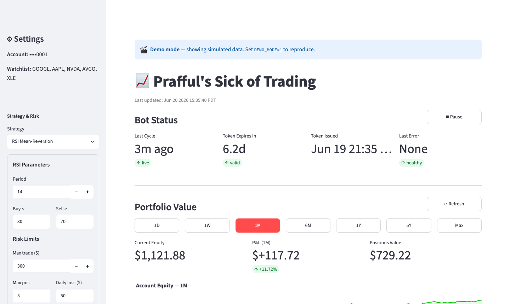
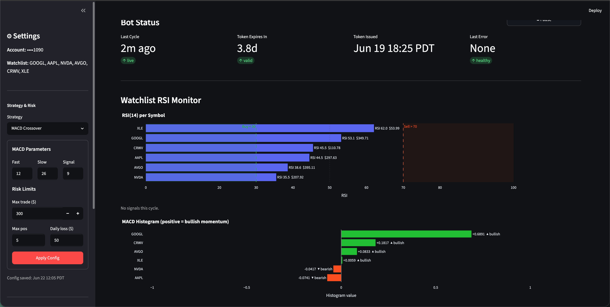
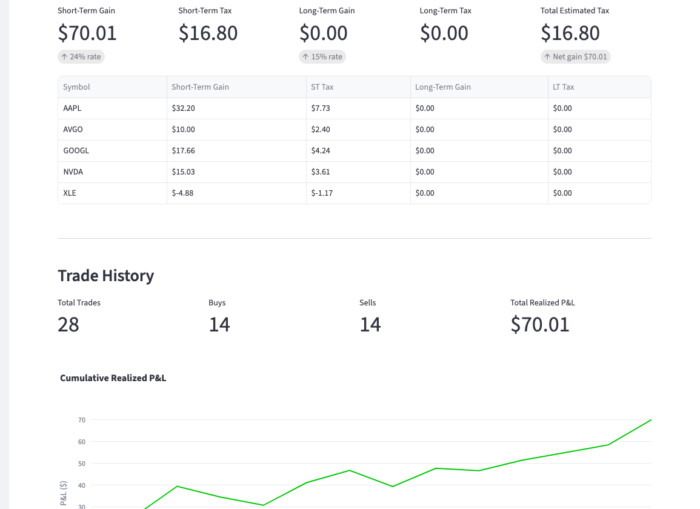
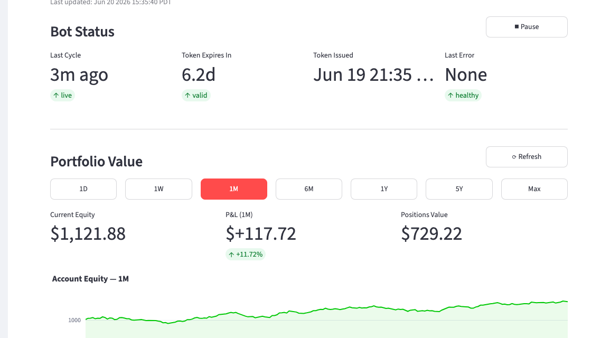
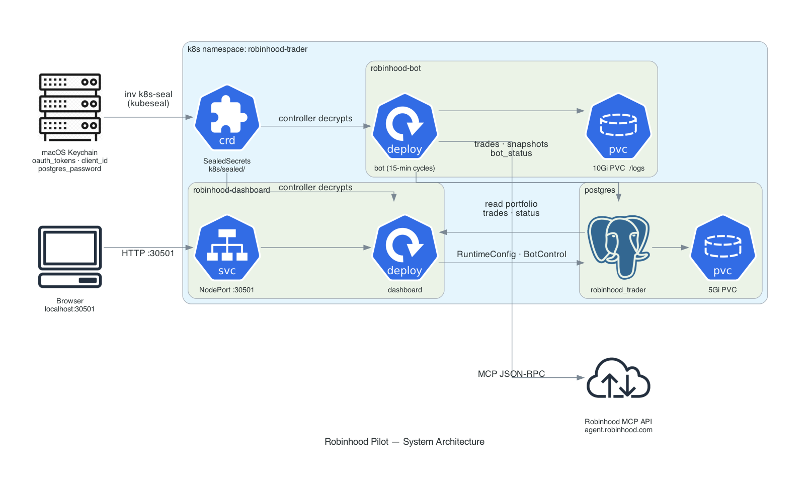

An automated equity trading bot for Robinhood, with four switchable strategies (RSI, MACD, Bollinger Bands, RSI+MACD), deployed on a local k3s cluster with a real-time Streamlit dashboard for monitoring, control, and tax tracking.
The local Streamlit dashboard runs at http://localhost:30501. It shows bot health, token expiry, a live per-symbol RSI monitor, strategy-specific indicator charts (MACD histogram or Bollinger %B), portfolio equity over selectable periods (1D → Max), cumulative P&L, tax obligations, and full trade history — auto-refreshing every 60 seconds. Strategy, parameters, and risk limits are switchable from the sidebar without a bot restart.




Uses Robinhood's official Agentic MCP API (JSON-RPC over HTTPS) — no screen-scraping or unofficial endpoints.
RSI Mean-Reversion, MACD Crossover, Bollinger Bands, RSI+MACD Combo — switch live from the dashboard. Bot picks up the new strategy on the next cycle.
Per-trade USD cap, max open positions, daily loss limit — editable from the dashboard sidebar. Bot picks them up on the next cycle.
macOS Keychain → Bitnami Sealed Secrets → k8s Secrets. No credentials ever touch disk or git.
Every trade, portfolio snapshot, and bot heartbeat stored in Postgres with daily pg_dump backups (7 retained).
Detects stale TCP connections after laptop sleep, reconnects transparently. SIGTERM-safe graceful shutdown.
Live RSI(14) bar chart for all watchlist symbols with buy/sell threshold zones — always visible. A second chart shows the active strategy's own indicator (MACD histogram or Bollinger %B).
Pause order placement without stopping the bot process. Useful during volatile periods — bot keeps updating status and taking portfolio snapshots.
Daily-rotating log files on a 10Gi PVC. inv k8s-logs-pull copies the full history to your Mac.

git clone https://github.com/prafful13/robinhood-pilot
cd robinhood-pilot
uv venv --python 3.13
uv sync --all-groupsconfig.yamlSet your account_number (found in Robinhood → Account → Account number) and adjust the watchlist, RSI thresholds, and risk limits to your preference.
uv run inv keychain-set client_id <your-client-id>
uv run inv secrets-init # generates postgres password → Keychain
uv run inv auth # OAuth browser flow → token → KeychainThe client ID is stored in your macOS Keychain — never in files or git.
kubectl apply -f https://github.com/bitnami-labs/sealed-secrets/releases/download/v0.27.1/controller.yamlkubectl apply -f k8s/namespace.yaml
uv run inv k8s-seal # Keychain → k8s/sealed/*.yaml
kubectl apply -f k8s/sealed/ # SealedSecrets → real k8s Secretsuv run inv docker-build # build bot + dashboard images
uv run inv k8s-apply # deploy postgres, bot, dashboard
inv k8s-status # check pods are RunningNavigate to http://localhost:30501 — the dashboard auto-refreshes every 60 seconds.
Secrets flow from your Mac's Keychain into k8s pods without ever touching disk, environment variable literals, or git.
| Layer | Where | What |
|---|---|---|
| Keychain | macOS Keychain | Source of truth: OAuth tokens, client ID, postgres password |
| Sealed Secrets | k8s/sealed/*.yaml | Encrypted with cluster public key — safe to commit |
| k8s Secrets | In-cluster only | Decrypted by Bitnami controller; injected as env vars / file mounts |
OAuth tokens expire periodically. The dashboard shows a warning when expiry is within 3 days. Renew with:
uv run inv auth
uv run inv k8s-seal
kubectl apply -f k8s/sealed/
uv run inv k8s-restart